Minicube-I con módulos MY1
Contenido
[ocultar]Introducción
Minicube-I es el robot modular mínimo que es capaz de moverse hacia adelante y atrás. Para su montaje se necesitan los siguientes elementos:
- Un Módulos MY1 montado (Instrucciones de montaje)
- Un Unimod A1 montado (Instrucciones de montaje)
- 4 tornillos
- 4 tuercas
| 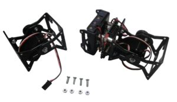 Inicio: Piezas necesarias para montar Minicube-I (Click para ampliar) |
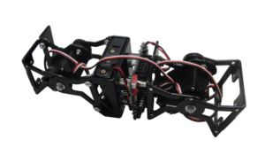 Final: Minicube-I montado (Click para ampliar) |


Montaje
Paso 1: Atornillar el módulo a Unimod A1
| 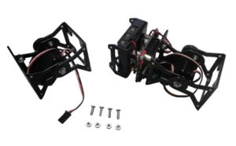 1) un Módulo MY1, Unimod A1 y 4 tornillos(Click para ampliar) |
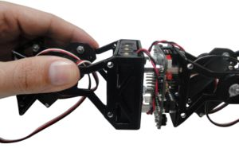 2) Uniendo el módulo con Unimod (Click para ampliar) |
| 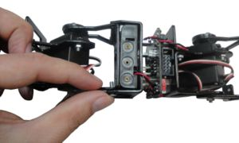 3) Colocando el primer tornillo (Click para ampliar) |
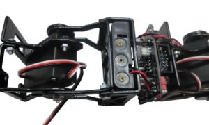 4) Colocando la tuerca (Click para ampliar) |
| 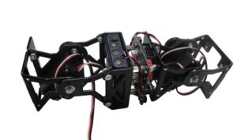 5) Colocar el resto de tornillos y tuercas (Click para ampliar) |


Paso 2: Conectar el servo a la Skycube
Conectar el servo del módulo a la Skycube. Se puede conectar en cualquiera de los conectores libres
| |
| 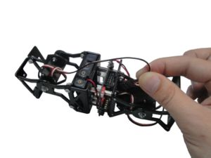 1) Conectar el servo a la skycube (Click para ampliar) |
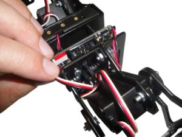 2) Vista de la conexión de los dos servos a la Skycube(Click para ampliar) |
| 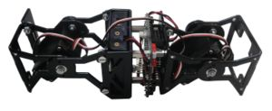 3) Estado final del robot (Click para ampliar) |


Paso 3 (Opcional) Fijar los cables con bridas
Este paso es opcional. Para que los cables no molesten se pueden sujetar con bridas. Antes de apretar las bridas, asegurarse de que los módulos se mueven correctamente y que los cables no se tensan demasiado.
| 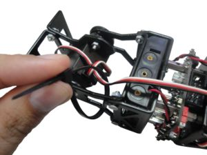 1) Colocar la brida alrededor de uno de los cables (Click para ampliar) |
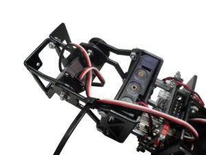 2) Apretar la brida para que enganche el cable (Click para ampliar) |
| 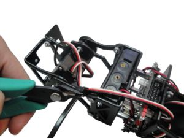 3) Cortar el sobrante de la brida, con unos alicates (Click para ampliar) |
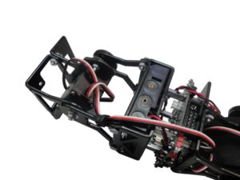 4) Una de las bridas ya está puesta (Click para ampliar) |
| 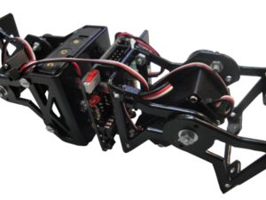 5) Repetir para una segunda brida (Click para ampliar) |
 6) Resultado final. (Click para ampliar) |


Fotos
| Álbum de fotos |
Enlaces
Noticias
- 16/Marzo/2010: Primera versión de esta página
- 10/Marzo/2010: Comenzada esta página